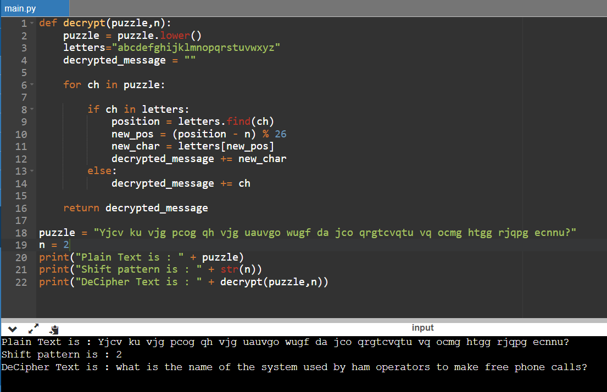

Puzzle:
Yjcv ku vjg pcog qh vjg uauvgo wugf da jco qrgtcvqtu vq ocmg htgg rjqpg ecnnu?
what is the name of the system used by ham operators to make free phone calls?
Python Code:
def decrypt(puzzle,n):
puzzle = puzzle.lower()
letters="abcdefghijklmnopqrstuvwxyz"
decrypted_message = ""
for ch in puzzle:
if ch in letters:
position = letters.find(ch)
new_pos = (position - n) % 26
new_char = letters[new_pos]
decrypted_message += new_char
else:
decrypted_message += ch
return decrypted_message
puzzle = "Yjcv ku vjg pcog qh vjg uauvgo wugf da jco qrgtcvqtu vq ocmg htgg rjqpg ecnnu?"
n = 2
print("Plain Text is : " + puzzle)
print("Shift pattern is : " + str(n))
print("DeCipher Text is : " + decrypt(puzzle,n))
